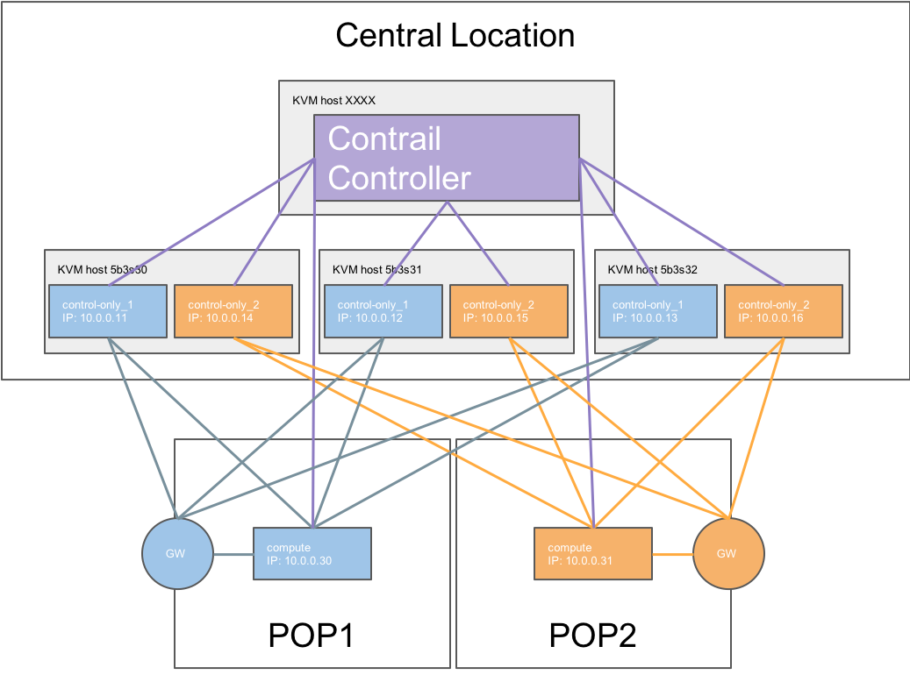

Remote Compute¶
Remote Compute extends the data plane to remote locations (POP) whilest keeping the control plane central. For Contrail, each POP will have its own set of Contrail control services, which are running in the central location. The difficulty is to ensure that the compute nodes of a given POP connect to the Control nodes assigned to that POC. The Control nodes must have predictable IP addresses and the compute nodes have to know these IP addresses. In order to achieve that the following methods are used:
- Static IP assignment
- Precise Node placement
- Per Node hieradata
Each overcloud node has a unique DMI UUID. This UUID is known on the undercloud as well as on the overcloud nodes. Hence, this UUID can be used for mapping node specific information.
Overview¶
Mapping table¶
+================================+=======================+======================================+======================================+========+===========+======+ | Nova Name | Ironic Name | Ironic UUID | DMI UUID | KVM | IP address| POP | +================================+=======================+======================================+======================================+========+===========+======+ |overcloud-contrailcontrolonly-0 | control-only-1-5b3s30 | 7d758dce-2784-45fd-be09-5a41eb53e764 | 73F8D030-E896-4A95-A9F5-E1A4FEBE322D | 5b3s30 | 10.0.0.11 | POP1 | +——————————–+———————–+————————————–+————————————–+——–+———–+——+ |overcloud-contrailcontrolonly-1 | control-only-2-5b3s30 | d26abdeb-d514-4a37-a7fb-2cd2511c351f | 14639A66-D62C-4408-82EE-FDDC4E509687 | 5b3s30 | 10.0.0.14 | POP2 | +——————————–+———————–+————————————–+————————————–+——–+———–+——+ |overcloud-contrailcontrolonly-2 | control-only-1-5b3s31 | 91dd9fa9-e8eb-4b51-8b5e-bbaffb6640e4 | 28AB0B57-D612-431E-B177-1C578AE0FEA4 | 5b3s31 | 10.0.0.12 | POP1 | +——————————–+———————–+————————————–+————————————–+——–+———–+——+ |overcloud-contrailcontrolonly-3 | control-only-2-5b3s31 | 09fa57b8-580f-42ec-bf10-a19573521ed4 | 09BEC8CB-77E9-42A6-AFF4-6D4880FD87D0 | 5b3s31 | 10.0.0.15 | POP2 | +——————————–+———————–+————————————–+————————————–+——–+———–+——+ |overcloud-contrailcontrolonly-4 | control-only-1-5b3s32 | f4766799-24c8-4e3b-af54-353f2b796ca4 | 3993957A-ECBF-4520-9F49-0AF6EE1667A7 | 5b3s32 | 10.0.0.13 | POP1 | +——————————–+———————–+————————————–+————————————–+——–+———–+——+ |overcloud-contrailcontrolonly-5 | control-only-2-5b3s32 | 58a803ae-a785-470e-9789-139abbfa74fb | AF92F485-C30C-4D0A-BDC4-C6AE97D06A66 | 5b3s32 | 10.0.0.16 | POP2 | +——————————–+———————–+————————————–+————————————–+——–+———–+——+
ControlOnly preparation¶
Add ControlOnly Overcloud VMs to Overcloud KVM host¶
Note
This has to be done on the Overcloud KVM hosts
On each of the Overcloud KVM hosts two ControlOnly Overcloud VM definitions will be created.
ROLES=control-only:2
num=4
ipmi_user=ADMIN
ipmi_password=ADMIN
libvirt_path=/var/lib/libvirt/images
port_group=overcloud
prov_switch=br0
/bin/rm ironic_list
IFS=',' read -ra role_list <<< "${ROLES}"
for role in ${role_list[@]}; do
role_name=`echo $role|cut -d ":" -f 1`
role_count=`echo $role|cut -d ":" -f 2`
for count in `seq 1 ${role_count}`; do
echo $role_name $count
qemu-img create -f qcow2 ${libvirt_path}/${role_name}_${count}.qcow2 99G
virsh define /dev/stdin <<EOF
$(virt-install --name ${role_name}_${count} \
--disk ${libvirt_path}/${role_name}_${count}.qcow2 \
--vcpus=4 \
--ram=16348 \
--network network=br0,model=virtio,portgroup=${port_group} \
--network network=br1,model=virtio \
--virt-type kvm \
--cpu host \
--import \
--os-variant rhel7 \
--serial pty \
--console pty,target_type=virtio \
--graphics vnc \
--print-xml)
EOF
vbmc add ${role_name}_${count} --port 1623${num} --username ${ipmi_user} --password ${ipmi_password}
vbmc start ${role_name}_${count}
prov_mac=`virsh domiflist ${role_name}_${count}|grep ${prov_switch}|awk '{print $5}'`
vm_name=${role_name}-${count}-`hostname -s`
kvm_ip=`ip route get 1 |grep src |awk '{print $7}'`
echo ${prov_mac} ${vm_name} ${kvm_ip} ${role_name} 1623${num}>> ironic_list
num=$(expr $num + 1)
done
done
Note
the generated ironic_list will be needed on the Undercloud to import the nodes to ironic
Import ControlOnly nodes to ironic¶
Get the ironic_lists from the Overcloud KVM hosts and combine them.
Examle:
cat ironic_list_control_only
52:54:00:3a:2f:ca control-only-1-5b3s30 10.87.64.31 control-only 16234
52:54:00:31:4f:63 control-only-2-5b3s30 10.87.64.31 control-only 16235
52:54:00:0c:11:74 control-only-1-5b3s31 10.87.64.32 control-only 16234
52:54:00:56:ab:55 control-only-2-5b3s31 10.87.64.32 control-only 16235
52:54:00:c1:f0:9a control-only-1-5b3s32 10.87.64.33 control-only 16234
52:54:00:f3:ce:13 control-only-2-5b3s32 10.87.64.33 control-only 16235
Import
ipmi_password=ADMIN
ipmi_user=ADMIN
DEPLOY_KERNEL=$(openstack image show bm-deploy-kernel -f value -c id)
DEPLOY_RAMDISK=$(openstack image show bm-deploy-ramdisk -f value -c id)
num=0
while IFS= read -r line; do
mac=`echo $line|awk '{print $1}'`
name=`echo $line|awk '{print $2}'`
kvm_ip=`echo $line|awk '{print $3}'`
profile=`echo $line|awk '{print $4}'`
ipmi_port=`echo $line|awk '{print $5}'`
uuid=`openstack baremetal node create --driver ipmi \
--property cpus=4 \
--property memory_mb=16348 \
--property local_gb=100 \
--property cpu_arch=x86_64 \
--driver-info ipmi_username=${ipmi_user} \
--driver-info ipmi_address=${kvm_ip} \
--driver-info ipmi_password=${ipmi_password} \
--driver-info ipmi_port=${ipmi_port} \
--name=${name} \
--property capabilities=node:contrail-control-only-${num},profile:${profile},boot_option:local \
-c uuid -f value`
openstack baremetal node set ${uuid} --driver-info deploy_kernel=$DEPLOY_KERNEL --driver-info deploy_ramdisk=$DEPLOY_RAMDISK
openstack baremetal port create --node ${uuid} ${mac}
openstack baremetal node manage ${uuid}
num=$(expr $num + 1)
done < <(cat ironic_list_control_only)
ControlOnly node introspection¶
openstack overcloud node introspect --all-manageable --provide
ControlOnly node flavor creation¶
openstack flavor create control-only --ram 4096 --vcpus 1 --disk 40
openstack flavor set --property "capabilities:boot_option"="local" \
--property "capabilities:profile"="control-only" control-only
Static IP assignment¶
Control Only nodes must have static IPs assigned
cat ~/tripleo-heat-templates/environments/contrail/contrail-ips-from-pool-all.yaml
# Environment file demonstrating how to pre-assign IPs to all node types
resource_registry:
OS::TripleO::ContrailControlOnly::Ports::InternalApiPort: ../../network/ports/internal_api_from_pool.yaml
OS::TripleO::ContrailControlOnly::Ports::TenantPort: ../../network/ports/tenant_from_pool.yaml
# Management network is optional and disabled by default
#OS::TripleO::Controller::Ports::ManagementPort: ../network/ports/management_from_pool.yaml
parameter_defaults:
ContrailControlOnlyIPs:
internal_api:
- 10.1.0.11
- 10.1.0.14
- 10.1.0.12
- 10.1.0.15
- 10.1.0.13
- 10.1.0.16
tenant:
- 10.0.0.11
- 10.0.0.14
- 10.0.0.12
- 10.0.0.15
- 10.0.0.13
- 10.0.0.16
Create scheduler hints¶
cat ~/tripleo-heat-templates/environments/contrail/contrail-scheduler-hints.yaml
parameter_defaults:
ContrailControlOnlySchedulerHints:
'capabilities:node': 'contrail-control-only-%index%'
Create subcluser nodedata¶
Get the ironic UUID of the ControlOnly nodes¶
openstack baremetal node list |grep control-only
| 7d758dce-2784-45fd-be09-5a41eb53e764 | control-only-1-5b3s30 | None | power off | available | False |
| d26abdeb-d514-4a37-a7fb-2cd2511c351f | control-only-2-5b3s30 | None | power off | available | False |
| 91dd9fa9-e8eb-4b51-8b5e-bbaffb6640e4 | control-only-1-5b3s31 | None | power off | available | False |
| 09fa57b8-580f-42ec-bf10-a19573521ed4 | control-only-2-5b3s31 | None | power off | available | False |
| f4766799-24c8-4e3b-af54-353f2b796ca4 | control-only-1-5b3s32 | None | power off | available | False |
| 58a803ae-a785-470e-9789-139abbfa74fb | control-only-2-5b3s32 | None | power off | available | False |
The first ControlOnly node on each of the Overcloud KVM hosts will be used for POP1, the second for POP2
Get the ironic UUID of the POP compute nodes¶
openstack baremetal node list |grep compute
| 91d6026c-b9db-49cb-a685-99a63da5d81e | compute-3-5b3s30 | None | power off | available | False |
| 8028eb8c-e1e6-4357-8fcf-0796778bd2f7 | compute-4-5b3s30 | None | power off | available | False |
| b795b3b9-c4e3-4a76-90af-258d9336d9fb | compute-3-5b3s31 | None | power off | available | False |
| 2d4be83e-6fcc-4761-86f2-c2615dd15074 | compute-4-5b3s31 | None | power off | available | False |
From that list the first two compute nodes belong to POP1 the rest to POP2
Create an input yaml¶
vi ~/subcluster_input.yaml
---
- subcluster: subcluster1
asn: "65413"
control_nodes:
- uuid: 7d758dce-2784-45fd-be09-5a41eb53e764
ipaddress: 10.0.0.11
- uuid: 91dd9fa9-e8eb-4b51-8b5e-bbaffb6640e4
ipaddress: 10.0.0.12
- uuid: f4766799-24c8-4e3b-af54-353f2b796ca4
ipaddress: 10.0.0.13
compute_nodes:
- uuid: 91d6026c-b9db-49cb-a685-99a63da5d81e
vrouter_gateway: 10.0.0.1
- uuid: 8028eb8c-e1e6-4357-8fcf-0796778bd2f7
vrouter_gateway: 10.0.0.1
- subcluster: subcluster2
asn: "65414"
control_nodes:
- uuid: d26abdeb-d514-4a37-a7fb-2cd2511c351f
ipaddress: 10.0.0.14
- uuid: 09fa57b8-580f-42ec-bf10-a19573521ed4
ipaddress: 10.0.0.15
- uuid: 58a803ae-a785-470e-9789-139abbfa74fb
ipaddress: 10.0.0.16
compute_nodes:
- uuid: b795b3b9-c4e3-4a76-90af-258d9336d9fb
vrouter_gateway: 10.0.0.1
- uuid: 2d4be83e-6fcc-4761-86f2-c2615dd15074
vrouter_gateway: 10.0.0.1
Generate subcluster environment file¶
~/tripleo-heat-templates/tools/contrail/subcluster.py -i ~/subcluster_input.yaml \
-o ~/tripleo-heat-templates/environments/contrail/contrail-subcluster.yaml
Check subcluster environment file¶
cat ~/tripleo-heat-templates/environments/contrail/contrail-subcluster.yaml
parameter_defaults:
NodeDataLookup:
041D7B75-6581-41B3-886E-C06847B9C87E:
contrail_settings:
CONTROL_NODES: 10.0.0.14,10.0.0.15,10.0.0.16
SUBCLUSTER: subcluster2
VROUTER_GATEWAY: 10.0.0.1
09BEC8CB-77E9-42A6-AFF4-6D4880FD87D0:
contrail_settings:
BGP_ASN: '65414'
SUBCLUSTER: subcluster2
14639A66-D62C-4408-82EE-FDDC4E509687:
contrail_settings:
BGP_ASN: '65414'
SUBCLUSTER: subcluster2
28AB0B57-D612-431E-B177-1C578AE0FEA4:
contrail_settings:
BGP_ASN: '65413'
SUBCLUSTER: subcluster1
3993957A-ECBF-4520-9F49-0AF6EE1667A7:
contrail_settings:
BGP_ASN: '65413'
SUBCLUSTER: subcluster1
73F8D030-E896-4A95-A9F5-E1A4FEBE322D:
contrail_settings:
BGP_ASN: '65413'
SUBCLUSTER: subcluster1
7933C2D8-E61E-4752-854E-B7B18A424971:
contrail_settings:
CONTROL_NODES: 10.0.0.14,10.0.0.15,10.0.0.16
SUBCLUSTER: subcluster2
VROUTER_GATEWAY: 10.0.0.1
AF92F485-C30C-4D0A-BDC4-C6AE97D06A66:
contrail_settings:
BGP_ASN: '65414'
SUBCLUSTER: subcluster2
BB9E9D00-57D1-410B-8B19-17A0DA581044:
contrail_settings:
CONTROL_NODES: 10.0.0.11,10.0.0.12,10.0.0.13
SUBCLUSTER: subcluster1
VROUTER_GATEWAY: 10.0.0.1
E1A809DE-FDB2-4EB2-A91F-1B3F75B99510:
contrail_settings:
CONTROL_NODES: 10.0.0.11,10.0.0.12,10.0.0.13
SUBCLUSTER: subcluster1
VROUTER_GATEWAY: 10.0.0.1
Deployment¶
Add contrail-subcluster.yaml, contrail-ips-from-pool-all.yaml and contrail-scheduler-hints.yaml to the openstack deploy command:
openstack overcloud deploy --templates ~/tripleo-heat-templates \
-e ~/overcloud_images.yaml \
-e ~/tripleo-heat-templates/environments/network-isolation.yaml \
-e ~/tripleo-heat-templates/environments/contrail/contrail-plugins.yaml \
-e ~/tripleo-heat-templates/environments/contrail/contrail-services.yaml \
-e ~/tripleo-heat-templates/environments/contrail/contrail-net.yaml \
-e ~/tripleo-heat-templates/environments/contrail/contrail-subcluster.yaml \
-e ~/tripleo-heat-templates/environments/contrail/contrail-ips-from-pool-all.yaml \
-e ~/tripleo-heat-templates/environments/contrail/contrail-scheduler-hints.yaml \
--roles-file ~/tripleo-heat-templates/roles_data_contrail_aio.yaml